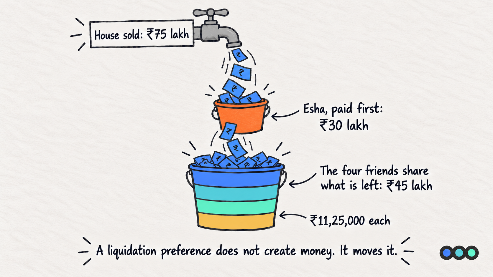
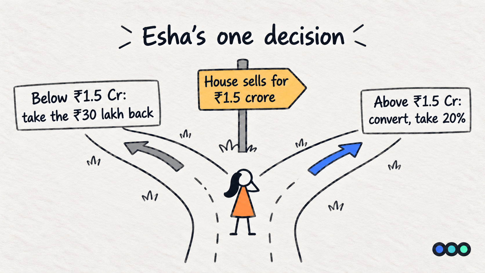
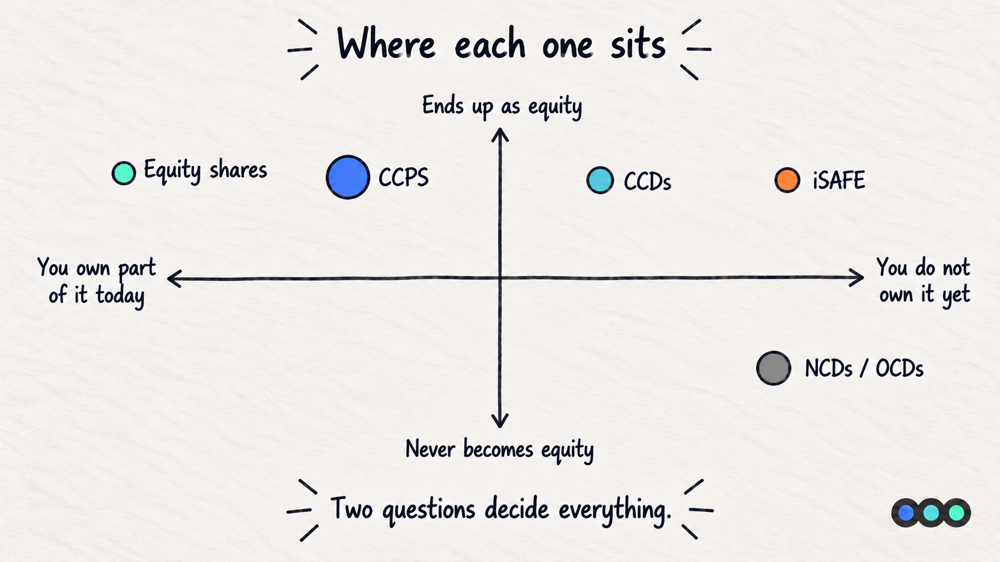
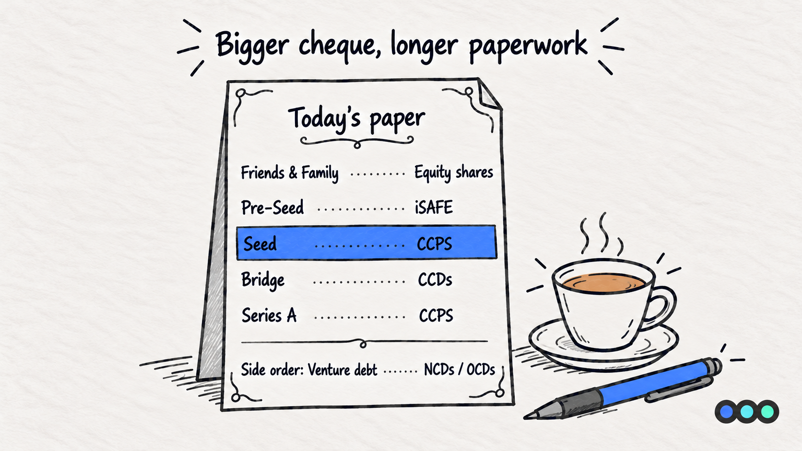

Prologue Blog · Finance for the Fundraising-Curious, Part 2
Same Money, Different Paper
Esha's Options
TL;DR
How much an investor gives you is only half the deal. The other half is what paper they get in return. The same ₹30 lakh can buy plain shares, shares that get paid back first, or a loan that turns into shares later. In India most rounds do not use plain equity, so the paper is worth reading as carefully as the valuation.
Esha Asks for One More Thing
In Part 1, Esha put ₹30 lakh into the house. She got 25 new shares at ₹1,20,000 each, which made her a 20% owner of a house worth ₹1.5 crore.
That is where we left it. But in real life there is a conversation before the money arrives, and it goes something like this.
"I am happy to put in ₹30 lakh," Esha says. "But if this goes badly and we have to sell the house for less than we paid, I want my ₹30 lakh back before any of you take a single rupee."
Aman, Bhavna, Chirag and Divya look at each other. It sounds reasonable. It also sounds like it costs them something. Both are true.
That one sentence is what this whole post is about. Everything else, every acronym your investor will use, is just a way of writing that sentence down on paper.

First, What Happens With Plain Shares
Say the friends hold what you would expect: equity shares. Plain ownership. You get a vote, you get your share of whatever is left at the end, and you stand last in the queue when money is handed out.
Now suppose the renovation goes wrong, the area falls out of favour, and the house has to be sold for ₹75 lakh.
If Esha holds plain equity like everyone else, she owns 20%, so she gets 20%.
| Owner | Ownership | Gets | Put in |
|---|---|---|---|
| Aman | 20% | ₹15,00,000 | ₹25,00,000 |
| Bhavna | 20% | ₹15,00,000 | ₹25,00,000 |
| Chirag | 20% | ₹15,00,000 | ₹25,00,000 |
| Divya | 20% | ₹15,00,000 | ₹25,00,000 |
| Esha | 20% | ₹15,00,000 | ₹30,00,000 |
| Total | 100% | ₹75,00,000 | ₹1,30,00,000 |
Esha put in ₹30 lakh and walks away with ₹15 lakh. She lost half her money, and she lost it at the same rate as four people who bought in years earlier at a much lower price. That is what she is trying to avoid.
Now, With the Protection
What Esha asked for has a name: a liquidation preference. It means that when the house is sold, she is paid first, up to an agreed amount, before the other owners get anything.
The usual version is 1x, which means one times what she put in. Her ₹30 lakh comes off the top.
Same sale, ₹75 lakh, but now Esha holds paper with a 1x preference:
| Step | Working | Amount |
|---|---|---|
| Sale price | ₹75,00,000 | |
| Esha is paid first | Her ₹30 lakh, in full | ₹30,00,000 |
| Left for the four friends | ₹75,00,000 − ₹30,00,000 | ₹45,00,000 |
| Per original share | ₹45,00,000 ÷ 100 shares | ₹45,000 |
| Each friend gets | 25 shares × ₹45,000 | ₹11,25,000 |
Look at what moved. Esha went from ₹15 lakh to ₹30 lakh. Each friend went from ₹15 lakh to ₹11,25,000, a drop of ₹3,75,000 each.
Four friends losing ₹3,75,000 each is ₹15 lakh, which is exactly what Esha gained. The protection did not create money. It moved money, from the founders to the investor, in the one situation where there is not enough to go around.
This is the single most important thing to understand about your term sheet. A liquidation preference costs you nothing on a good day and a great deal on a bad one.

But What If the House Does Well?
Now flip it. The area booms, the renovation pays off, and the house sells for ₹3 crore.
If Esha only had the protection, she would take her ₹30 lakh and that would be that. She would have funded a renovation that turned ₹1.5 crore into ₹3 crore and collected nothing for it.
So her paper has a second feature. It is compulsorily convertible, which means it does not stay as a protected claim forever. At an agreed point, usually the next big round or a sale, it turns into ordinary equity shares.
On a ₹3 crore sale, Esha converts and takes her 20%.
| Owner | Ownership | Gets |
|---|---|---|
| Aman | 20% | ₹60,00,000 |
| Bhavna | 20% | ₹60,00,000 |
| Chirag | 20% | ₹60,00,000 |
| Divya | 20% | ₹60,00,000 |
| Esha | 20% | ₹60,00,000 |
| Total | 100% | ₹3,00,00,000 |
₹60 lakh by converting, against ₹30 lakh by taking the preference. She converts, obviously.
So where is the line? Her 20% is worth ₹30 lakh when the house sells for exactly ₹1.5 crore, which is the post-money valuation she bought in at. Below that she takes the preference. Above it she converts. That is the whole decision.

Napkin Math Box
A 1x liquidation preference, worked through on the house.
| What you want to find | Formula | House example |
|---|---|---|
| What the investor takes first | Amount invested × Preference multiple | ₹30 L × 1 = ₹30 L |
| What is left for everyone else | Sale price − Preference amount | ₹75 L − ₹30 L = ₹45 L |
| What each founder gets | Amount left ÷ Original shares × Shares held | ₹45 L ÷ 100 × 25 = ₹11,25,000 |
| What the investor gets if she converts | Ownership % × Sale price | 20% × ₹3 Cr = ₹60 L |
| The sale price where converting wins | Preference amount ÷ Ownership % | ₹30 L ÷ 20% = ₹1.5 Cr |
So What Is the Paper Called?
Put those two features together, a preference on the way down and compulsory conversion on the way up, and you have described the instrument that most Indian venture rounds actually use. Here are the five you will meet.
1. Equity shares
Plain ownership, the kind the four friends hold. You get votes and you get your percentage. No special protection, and you are last in the queue if the company is sold or wound up. This is almost always what founders hold, and almost never what an institutional investor takes.
2. CCPS, compulsorily convertible preference shares
CCPS is exactly the deal Esha negotiated. "Preference" means she is paid before ordinary shareholders. "Compulsorily convertible" means the shares must turn into equity shares at an agreed trigger, so she cannot sit on a protected claim indefinitely.
This is the preferred instrument for institutional rounds in India. It gives the investor downside protection without leaving the company carrying something that behaves like permanent debt.
3. CCDs, compulsorily convertible debentures
A CCD starts life as a loan to the company and must convert into shares later. Because it begins as debt, it can sometimes be arranged faster than a priced equity round, which is why it shows up in bridge rounds between two proper rounds.
The practical difference for you is that until it converts, it is a liability on your balance sheet, and it may carry interest.
4. NCDs and OCDs, the ones that may never convert
A non-convertible debenture is debt, full stop. It gets repaid with interest and never becomes ownership. An optionally convertible debenture is debt that the holder may convert into shares if they choose, but is not obliged to.
This is the territory of venture debt rather than venture capital. The lender is not buying a share of your upside, they are lending against your ability to repay, so they care about cash flows and security, not your 2030 vision.
5. iSAFE
In the United States, very early rounds often use a SAFE, a simple agreement for future equity: the investor gives money now and gets shares later, at the next priced round, usually at a discount. It is fast, short and cheap to paper.
A US-style SAFE does not drop neatly into Indian company law, so the Indian ecosystem uses an adapted version usually called iSAFE, structured to fit local rules on what a company can issue and when.
The attraction is speed and the avoidance of agreeing a valuation before you are ready to. The catch is that you are deferring the dilution conversation, not avoiding it. You will find out what you gave away at the next round.
This post is general information, not financial, legal or tax advice. It is written to help founders recognise the terms they will meet in a term sheet. The rules on convertible instruments change, and how they apply depends on how your round is structured and who is investing, so check your own deal with your CA or company secretary before you sign.

Side by Side
| Instrument | Owns part of the company today? | Becomes equity? | Paid before founders on a sale? | Founder watch-out |
|---|---|---|---|---|
| Equity shares | Yes | Already is | No, ranks last | None, this is the simple case |
| CCPS | Yes, as preference shares | Yes, compulsorily | Yes, up to the preference | The multiple, and whether it is participating |
| CCDs | No, it is debt until it converts | Yes, compulsorily | Yes, as a creditor | Interest and the conversion terms |
| NCDs | No | No | Yes, as a creditor | Repayment schedule and security |
| OCDs | No | Only if the holder chooses | Yes, as a creditor | They convert when it suits them, not you |
| iSAFE | No, not yet | Yes, at the next priced round | Depends on the terms | The discount and the valuation cap |
Which One Will You Be Offered?
Roughly, the earlier and smaller the cheque, the simpler and faster the paper. The bigger the cheque, the more the investor will want written down.
| Stage | Usually offered | Why |
|---|---|---|
| Friends and family | Equity shares | Small amounts, high trust, nobody wants the paperwork |
| Pre-seed, angels | iSAFE, sometimes CCPS | Speed, and no need to fix a valuation yet |
| Seed | CCPS | First properly priced round, investor wants downside protection |
| Bridge between rounds | CCDs, sometimes iSAFE | Quick money without repricing the company |
| Series A and beyond | CCPS | Preferred for institutional rounds in India |
| Alongside a round | NCDs or OCDs | Venture debt, to extend runway without more dilution |

Key Terms
Everything this post defined, in one place.
- Equity shares
- Plain ownership. Votes and a share of whatever is left at the end, with no special protection and last place in the queue when money is handed out. Almost always what founders hold.
- Liquidation preference
- The right to be paid first, up to an agreed amount, when the company is sold. It costs the founders nothing on a good day and a great deal on a bad one.
- 1x
- The usual size of a liquidation preference: one times the amount invested. On a ₹30 lakh investment, ₹30 lakh comes off the top before anyone else is paid.
- Participating preference
- A preference where the investor takes their money back and then also shares what is left. A plain preference makes them choose one or the other instead.
- Compulsorily convertible
- The instrument must turn into equity shares at an agreed trigger, usually the next priced round or a sale. The investor cannot hold a protected claim indefinitely.
- CCPS, compulsorily convertible preference shares
- Preference shares that must convert into equity. They carry a liquidation preference on the way down and convert to capture the upside.
- CCDs, compulsorily convertible debentures
- Debt that must convert into shares later. Until it converts it is a liability on the balance sheet and it may carry interest.
- NCDs and OCDs
- A non-convertible debenture is debt that is repaid with interest and never becomes ownership. An optionally convertible debenture is debt the holder may convert if they choose. This is venture debt territory.
- iSAFE
- An India-adapted version of the US SAFE: money now, shares at the next priced round, usually at a discount. It defers the dilution conversation rather than avoiding it.
Common Founder Mistakes
- Negotiating the valuation and skimming the rest. A higher valuation with a 2x participating preference can leave you worse off than a lower valuation with a plain 1x. The headline number is not the deal.
- Not asking what "participating" means. With a plain preference the investor chooses: take the money back, or convert and take the percentage. With a participating preference they do both, taking their money back and then sharing what is left. Ask which one you are being offered.
- Agreeing to a multiple above 1x. At 2x, Esha would take ₹60 lakh off the top of a ₹75 lakh sale and the four friends would split ₹15 lakh. Multiples are rare in healthy rounds and are worth pushing back on hard.
- Treating an iSAFE as free money. No valuation today means no dilution figure today. It does not mean no dilution. Model what the cap and discount do to your cap table at the next round, before you sign.
- Forgetting that debt is debt. A CCD or an NCD sits on your balance sheet and may carry interest. If your investor is lending rather than buying, your obligations are different in kind, not just in degree.
Next in the Series
Part 3 of Finance for the Fundraising-Curious comes out next Monday. Available Monday, 19 October.
Not sure which round you are raising?
That is the conversation we have with founders most often, and it is rarely about the number. It is about what you have proven, and whether your deck, your model and your story all say the same thing.
Prologue works with founders before they raise. If you are planning a round and want a second opinion on where you actually stand, talk to us.

About Sakshay Upadhyay
Sakshay Upadhyay is an Investment Associate at Earlyseed Ventures and a Warwick Business School alumnus. With over four years in venture capital finance, Sakshay has worked with more than 30 founders on fundraising strategy and financial modelling.